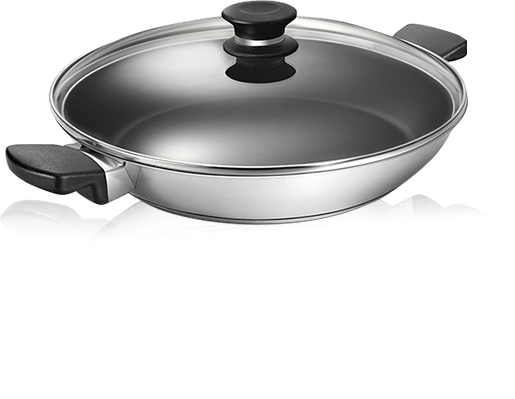

或撥打客服專線： (03)353-7800
【二代鈦磁不沾鍋】直徑31.4公分 / 深度5.7公分 / 含蓋深度12.2公分
【二代鈦瓷不沾鍋5大特色，生手廚藝一樣出色】

【透視科技的完美科技】
- 超耐熱鍋耳及鍋蒂 好拿好用
- 隔熱式樹脂的鍋耳及鍋蒂，耐熱溫度達攝氏200度，
設計符合人體工學，好拿、好用、好順手！ - 強化透明玻璃鍋蓋 安全烹調蓋好看
- 鈦瓷不沾鍋的玻璃鍋蓋能在烹調食物時一覽無遺，
無須頻頻掀起鍋蓋，煎魚煎肉從此不會煎過頭，美味永遠恰到好處！ - 堅硬鍋身鍋底均勻導熱不變形
-
- 鍋身 採用18/8不銹鋼，耐用、不生銹、不變形，清洗保養更容易
- 鍋底 夾層鋁板以AISI 430不銹鋼包覆，導熱均勻迅速，且能適用多種爐面！
- 輕鬆上手變身大廚優異的雙重強化科技 延長不沾黏效果、抗刮耐磨，生手也能輕鬆上手
- 容量大、彈性好用鍋面直徑30公分 單身或兩人小家庭，不同份量均彈性好用！
- 結能環保方便省時鍋面直徑30公分 烹調易控制，適用，多種爐面，讓料理更省時輕鬆！
- 多種料理方式一鍋搞定煎、煮、炒、炸 一鍋通通都能搞定，任誰都能輕鬆上菜！
- 少油烹調美味又健康少量的油即可煮食 低油脂的調理方式，讓你吃的美味、吃的健康！
【DuramicTM 多重強化塗層技術＋不銹鋼合金弧型噴射技術】雙重科技 層層精密 不沾鍋的唯一選擇 烹調新享樂主義

【不銹鋼合金弧形噴射技術 不脫落更持久】
二代鈦瓷不沾鍋以不銹鋼合金弧形噴射技術，先於不銹鋼底層上產生如山形般的凹凸弧型結構，增加與Duramic™多重塗層接觸面積，使塗層緊緊鎖住鍋底，鍋子更持久耐用！
【DuramicTM 多重塗層技術 抗刮抗磨 不沾好輕鬆】
Duramic™多重塗層技術，以航太科技使用的鈦金屬加上精密陶瓷粒子組合成強化塗層，使其硬度較市面上其他烹煮器具常使用的鉻或鋼高出許多倍，所以能強化不沾鍋塗層的硬度，延長不沾黏效果，比一般不沾鍋更抗刮耐磨！
1表層以摩擦係數低的不沾塗料( PTFE) 於表層，因其表面極為光滑，使其他物質非常不容易附著於其上。
2+3中下層由顆粒尺寸大小不一的鈦金屬與精密陶瓷粒子所組合成的強化塗層。因其大小不一的顆粒，就像瓶子中裝滿了大小不同的石頭、沙子填滿縫隙，讓塗層硬度及黏著度都大大提升。中層 幫助增強表層PTFE的硬度，延長使用壽命及耐用度，下層 則利用其黏著度與山形般的凹凸弧型結構互相緊扣，讓塗層緊緊黏著於不銹鋼底座上。